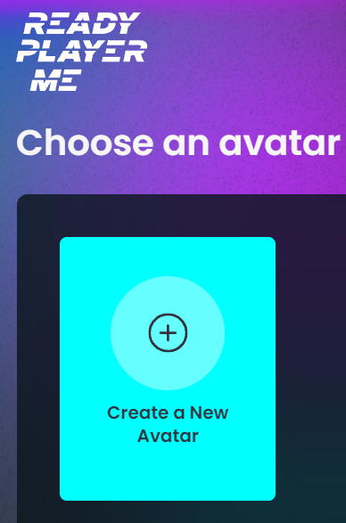
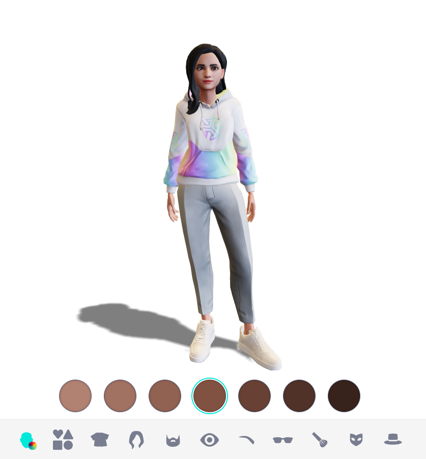
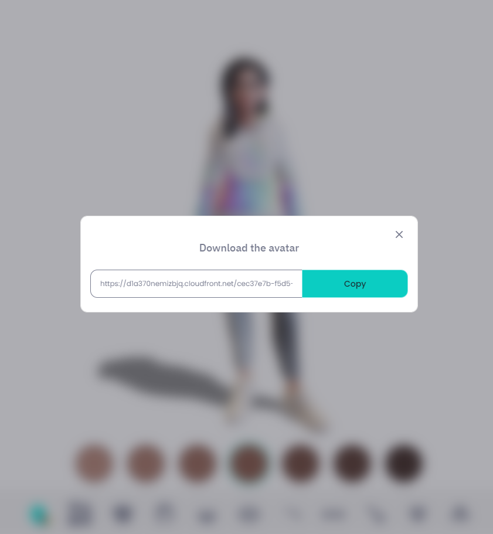
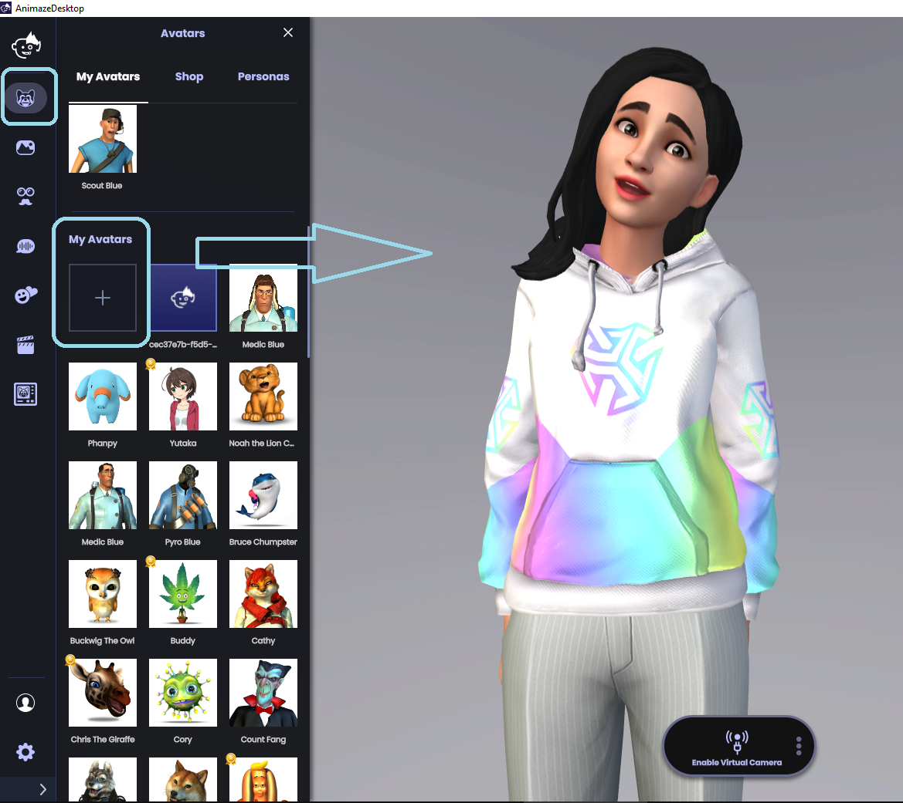

How to use your Ready Player Me Model in Animaze
Please note that all Ready Player Me articles for Animaze are legacy docs for those users who still have Ready Player Me content saved locally. The Ready Player Me third-party service has been discontinued, and no new GLB files can be generated using the Ready Player Me URL (and the Animaze subdomain) linked below.
In the Animaze app, you can stream and video chat as your Ready Player Me character. Go from a selfie to streaming as your avatar self in just a couple of clicks:
-
First, go to https://animaze.readyplayer.me/ and hit the Create A New Avatar button

-
Create your avatar from scratch from Ready Player Me presets or from a picture of yourself. You can also further customize your avatar with different outfits and looks, so set aside some time to find your right style!

-
When you're ready, click Done. Next, click Copy and paste the link in the web browser's address bar to download your avatar as a GLB file.

-
Open Animaze. Click the Avatar icon in the left menu bar. Go to My Avatars and click on the + sign.

Pro tip: Remember you can always customize your Ready Player Me avatar in the Animaze Editor, or the Animaze app using the re-texturing feature. Learn more about the retexturing tool in this specialized article!
Learn how to set up your stream in our dedicated article!